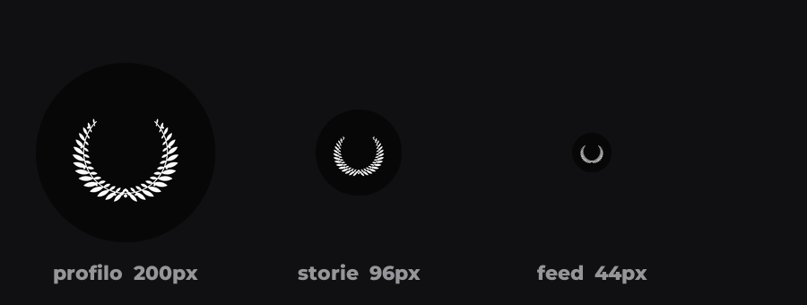

TIPS
MOTIVAZIONALE
Il logo
Corona d'alloro, bianca su nero.
Foto profilo — 1080×1080
Tieni premuto per salvarla

Come si vede alle misure vere
Tieni premuto per salvarla
Trasparente, per sovrapporla
Tieni premuto per salvarla